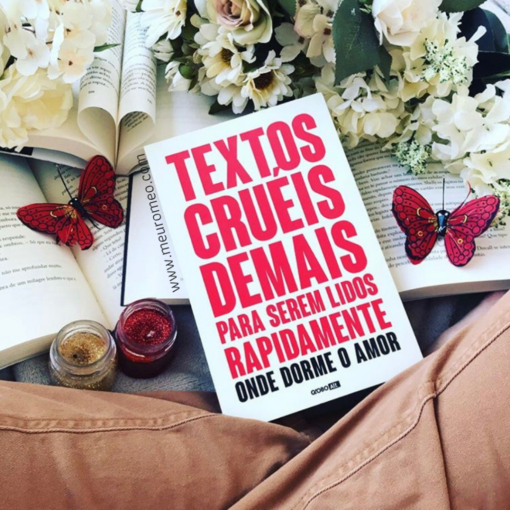
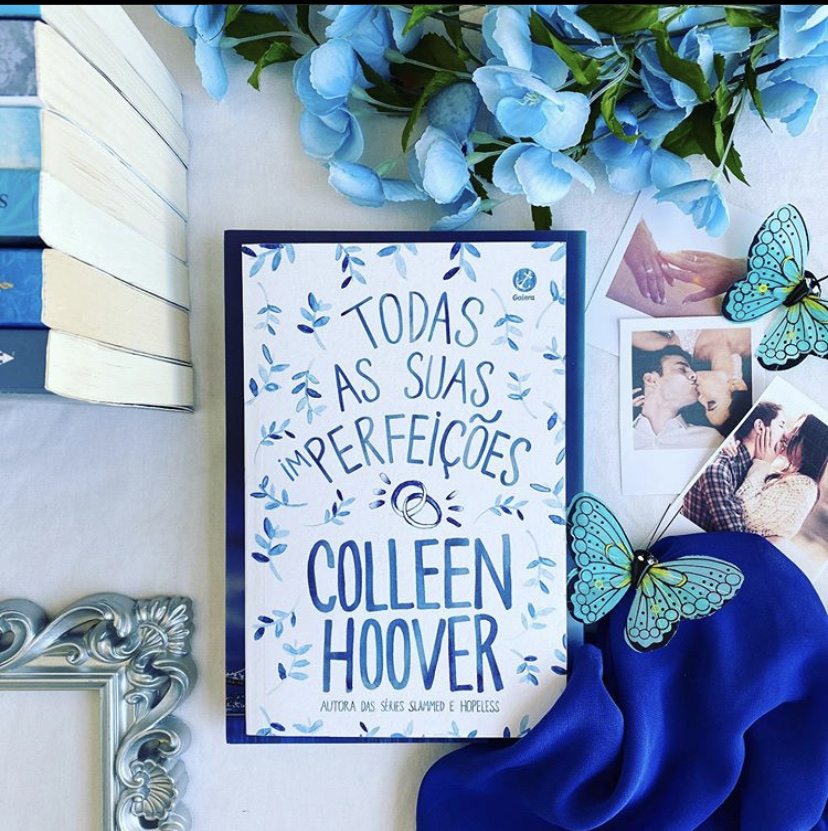

Nossos Livros
.webp)
A Biblioteca da Meia-Noite
Uma jornada emocionante entre escolhas e possibilidades de vida.
R$ 42,90.webp)
jantar secreto
é um livro que perturba, provoca e ultrapassa limites, mas também te obriga a encarar verdades desconfortáveis sobre a sociedade e sobre as escolhas humanas
R$ 59,90
Textos Crueis demais para serem lidos rapidamente
Um livro que cutuca feridas emocionais, mas também ajuda a entender e nomear o que a gente sente.
R$ 34,90
Se ele estivesse comigo
A autora best-seller Laura Nowlin tece uma dolorosa, autêntica e brutal história sobre amor, arrependimento e os impactos que nossas decisões têm nas relações que mantemos, o livro perfeito para fãs de Colleen Hoover e Jenny Han.
R$ 45,90.webp)
As mil partes do meu coração
Nem todo erro merece uma consequência. Às vezes a única coisa que ele merece é o perdão. Um livro sensível e viciante da rainha do romance, As mil partes do meu coração mostra que nunca é tarde demais para perdoar e reconstruir pontes com quem nos magoou.
R$ 47,90
Por todas as suas imperfeições
Todas as suas (im)perfeições fala sobre um casamento conturbado e uma promessa esquecida que pode ser capaz de salvá-lo.
R$ 29,90